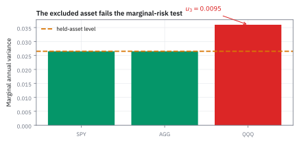

8.6 Marginals of the Multivariate Normal
marginal ของ MVN คือการเลิกถามถึงตัวแปรบางตัวโดยปล่อยให้มันสุ่มต่อไป ผลที่เหลือยังเป็น Normal และใช้ mean กับ covariance ส่วนที่ตรงชื่อได้ทันทีโดยไม่ต้องประมาณใหม่
แบบจำลองรายวันของ desk ให้ SPX มี mean 0.04% และ SD 2% ส่วน QQQ มี mean 0.03% และ SD 3% correlation 0.4 และสมมติว่าทั้งคู่เป็น joint Normal คุณถือ SPX อย่างเดียว \$10 ล้าน ระบบความเสี่ยงสองระบบให้ตัวเลขไม่ตรงกัน ระบบ A ใส่น้ำหนักของ QQQ เป็นศูนย์ ระบบ B ใส่ผลตอบแทนของ QQQ เป็นศูนย์ เพราะ “เราไม่ได้ถือ QQQ จะปล่อยให้มันขยับทำไม” SD ต่อวันของพอร์ตจากสองระบบเท่ากันไหม และระบบไหนถูก
ลองตอบก่อนเปิดเฉลย
ไม่เท่า ระบบ A ได้ SD 2% หรือ \$200,000 ต่อวัน และเป็นคำตอบที่ถูก เพราะ QQQ ยังขึ้นลงได้ทุกแบบ เราแค่ไม่ได้ถามถึงมัน ระบบ B ได้ $2\%\times\sqrt{1-0.4^2}\approx1.833\%$ หรือ \$183,303 ต่ำไป 8.3% เพราะมันตอบอีกคำถามหนึ่ง คือ “ถ้ารู้แล้วว่าวันนี้ QQQ ปิดที่ 0% SPX จะแกว่งเท่าไร” การรู้ข้อมูลเพิ่มทำให้ความไม่แน่นอนลดลง แต่เช้านี้ยังไม่มีใครรู้ว่า QQQ จะปิดเท่าไร
ภาพรวมก่อนลงสูตร
มองผลตอบแทนคู่ (SPX, QQQ) เป็นเนินเขาบนระนาบ ยิ่งสูงยิ่งเกิดบ่อย วงรีคือเส้นระดับของเนิน ซึ่งdensity ของ MVN วาดไว้แล้ว คำถาม “SPX ตัวเดียวกระจายแบบไหน ไม่ว่า QQQ จะทำอะไร” คือการรวม density ตามเส้นตั้งทุกเส้น ให้ QQQ ทุกค่ามีส่วน ผลที่ได้คือ “เงา” ของเนินที่ทาบลงบนแกน SPX เรียกว่า marginal distribution
ส่วนคำถาม “SPX กระจายแบบไหน ถ้ารู้ว่า QQQ ปิดที่ 0%” คือการตัดเนินตามเส้นนอนเส้นเดียว แล้วขยายให้พื้นที่เป็น 1 นั่นคือ conditional distribution ซึ่งหน้าถัดไปจะทำเต็มรูปแบบ รูปด้านล่างวางสองอย่างไว้คู่กัน เงากว้างกว่ารอยตัดเสมอเมื่อ correlation ไม่เป็นศูนย์ ระบบ A ดูเงา ระบบ B ดูรอยตัด
หน้านี้จะ integrate จริงในสองมิติเพื่อดูว่าเงาของ Normal สองมิติเป็น Normal หนึ่งมิติ จากนั้นพิสูจน์ด้วย MGF ว่าจะเลือกกี่ตัวจากกี่ตัวก็ได้ผลแบบเดียวกัน วิธีคือหยิบแถวกับคอลัมน์ที่ตรงชื่อออกมา แล้วใช้กับตาราง covariance ของ asset class 8 กลุ่ม ปิดท้ายด้วยกับดักที่ทำให้ตัวเลขผิดโดยไม่มี error ขึ้นเลย
รูป — เงาของเนินกับรอยตัดหนึ่งเส้น
ศัพท์ที่ใช้ในหัวข้อนี้
- Marginal distribution
- distribution ของตัวแปรบางตัว เมื่อรวมทุกความเป็นไปได้ของตัวที่เหลือเข้าไปแล้ว ใช้ตอบคำถามเรื่องสินทรัพย์ที่สนใจ โดยยังให้สินทรัพย์อื่นสุ่มตามปกติ คำนี้ไม่เกี่ยวกับเงินประกัน margin
- Conditional distribution
- distribution ของตัวแปรบางตัวเมื่อรู้ค่าของตัวอื่นแล้ว เป็นอีกคำถามหนึ่ง ใช้กับสถานการณ์อย่าง “ถ้า QQQ ลง 5% แล้ว SPX จะเป็นอย่างไร”
- Selection matrix $P$
- matrix ที่แต่ละแถวมีเลข 1 ตัวเดียว วางที่ตำแหน่งของชื่อที่เลือก ใช้เขียนการหยิบบางช่องของ vector ให้เป็นการคูณ matrix เพื่อใช้สูตร mean และ covariance ที่มีอยู่แล้ว
- Principal submatrix
- ส่วนของ covariance ที่หยิบแถวและคอลัมน์ด้วยชื่อชุดเดียวกัน ในลำดับเดียวกัน คือ covariance ของสินทรัพย์ชุดที่เลือก
- Precision matrix
- inverse ของ covariance matrix ใช้ใน density และใน conditional distribution ตัดบางส่วนของมันออกมาแล้วไม่ได้ marginal
สัญลักษณ์และหน่วย
| สัญลักษณ์ | ความหมาย | หน่วย |
|---|---|---|
| $X=(X_A,X_B)$ | random vector ที่แบ่งเป็นกลุ่มที่ถาม $A$ กับกลุ่มที่ไม่ถาม $B$ | ผลตอบแทน |
| $\mu,\ \Sigma$ | mean vector และ covariance ของทั้งแบบจำลอง | ผลตอบแทน; ผลตอบแทน² |
| $\Sigma_{AA},\ \Sigma_{AB}$ | ส่วนของ $\Sigma$ ที่แถวและคอลัมน์อยู่ในกลุ่ม $A$ และส่วนไขว้ระหว่าง $A$ กับ $B$ | ผลตอบแทน² |
| $u,\ v$ | score ของ SPX และ QQQ: ระยะจาก mean หารด้วย SD | ไม่มีหน่วย |
| $t,\ s$ | argument ของ MGF ไม่ใช่ผลตอบแทนที่เห็นจริง | ไม่มีหน่วย |
หน้านี้มีสองแบบจำลอง แบบแรกคือ SPX/QQQ รายวันในหน่วยเปอร์เซ็นต์ แบบที่สองคือ asset class 8 กลุ่มรายปีในหน่วยทศนิยม อย่าหยิบตัวเลขข้ามแบบจำลอง
ขั้นที่ 1 — นิยาม: รวมทุกค่าของตัวที่ไม่ได้ถาม
แบ่ง random vector เป็นสองกลุ่ม $X_A$ คือตัวที่สนใจ เช่น SPX และ $X_B$ คือตัวที่ไม่ได้ถาม เช่น QQQ ถ้ามี joint density นิยามของ marginal คือการรวม density ของทุกค่า $x_B$ ที่เกิดคู่กับ $x_A$ ได้ ถ้าเขียนด้วย moment generating function การไม่ถามคือการใส่ศูนย์ที่ argument ของ $X_B$
integral บรรทัดแรกคือการบวกทุกแถวของตาราง joint แบบที่ทำในmarginal distributions ของตัวแปร discrete แค่เปลี่ยนจากการบวกเป็นการ integrate ครอบทุกค่าของ $x_B$ ส่วนศูนย์ใน $M_X(t,0)$ เป็นศูนย์ของ argument ไม่ใช่ของ $X_B$ เราแค่ไม่เอา $X_B$ เข้าไปคิดใน exponent ตัว $X_B$ เองยังสุ่มเต็มที่ ถ้าเผลอแทน $X_B=0$ จริง ๆ ก็จะกลายเป็นคำถามของระบบ B ในโจทย์เปิด
| ศูนย์อยู่ตรงไหน | กำลังถามอะไร |
|---|---|
| น้ำหนัก $w_B=0$ | พอร์ตไม่ได้กำไรขาดทุนจาก $B$ โดยตรง แต่ $B$ ยังสุ่มตามปกติ |
| argument ของ MGF $s_B=0$ | ดู distribution ของ $A$ โดยไม่ถามถึง $B$ คือ marginal |
| ข้อมูล “$X_B$ ปิดที่ 0” | คำถาม conditional ซึ่งเปลี่ยนทั้ง mean และ SD ของ $A$ |
ขั้นที่ 2 — integrate จริงในสองมิติ: จัดรูปให้ส่วนของ QQQ เป็น bell ที่พื้นที่ 1
ทำไมเงาของ Normal สองมิติถึงเป็น Normal integrate ตรง ๆ ได้ แต่ต้องจัดรูปก่อน ใช้ score ของแต่ละตัว $u=(x-\mu_X)/\sigma_X$ และ $v=(y-\mu_Y)/\sigma_Y$ แล้วจัดกำลังสองในเลขชี้กำลังของdensity สองมิติ ให้ $v$ ไปอยู่ในวงเล็บเดียว
บรรทัดที่สองตรวจได้โดยรวมเศษเข้าด้วยกัน: $u^2(1-\rho^2)+v^2-2\rho uv+\rho^2u^2=u^2-2\rho uv+v^2$ ตัวคูณหน้า density สองมิติ $1/(2\pi\sigma_X\sigma_Y\sqrt{1-\rho^2})$ ก็แยกเป็นสองก้อนได้พอดี ทีนี้ดู $h$ เป็นฟังก์ชันของ $y$ โดยตรึง $x$ ไว้ เพราะ $\sigma_Y(v-\rho u)=y-\mu_Y-\rho\sigma_Y u$ ตัว $h$ จึงเป็น Normal density ที่ศูนย์กลาง $\mu_Y+\rho\sigma_Y u$ และ SD $\sigma_Y\sqrt{1-\rho^2}$ density ทุกตัวมีพื้นที่ 1 ไม่ว่าศูนย์กลางจะอยู่ตรงไหน
จังหวะที่คนมักติดคือบรรทัดที่สอง ดึง $g(x)$ ออกนอก integral ได้เพราะ integral วิ่งตาม $y$ ส่วน $x$ ถูกตรึงไว้ตลอด พอ $h$ มีพื้นที่ 1 ก็เหลือแค่ $g(x)$ ซึ่งคือ Normal ที่มี mean $\mu_X$ และ SD $\sigma_X$ ไม่มี $\rho$ หลงเหลือ correlation จึงไม่มีผลกับ marginal เลย และตลอดทางไม่ได้สมมติว่าสองตัวอิสระกัน ผลพลอยได้คือ $h(y\mid x)$ เป็น conditional density ของ QQQ เมื่อรู้ SPX ซึ่งหน้าถัดไปจะใช้ต่อ
ทำไม Normal density ถึงมีพื้นที่ 1
ให้ $I=\int_{-\infty}^{\infty}e^{-z^2/2}\,dz$ คูณ integral สองชุดเข้าด้วยกัน แล้วเปลี่ยนเป็นพิกัดเชิงขั้ว ซึ่งพื้นที่ชิ้นเล็กคือ $r\,dr\,d\theta$
ตัว $r$ ที่โผล่มาคือเหตุที่ integral นี้ทำได้ เพราะ $r\,e^{-r^2/2}$ มี antiderivative คือ $-e^{-r^2/2}$ หารด้วย $\sqrt{2\pi}$ แล้วจึงได้พื้นที่ 1 และการเลื่อนศูนย์กลางหรือยืด SD ไม่เปลี่ยนพื้นที่ เพราะตัวคูณหน้า density ปรับตามไว้แล้ว
รูป — ทุกเส้นตั้งตัดเนินได้ bell ที่ศูนย์กลางอยู่บนเส้นเดียวกัน
ขั้นที่ 3 — ตอบโจทย์เปิดด้วยโอกาสขาดทุนเกิน 3%
โจทย์ให้อะไรมาบ้าง: แบบจำลองรายวันในหน่วยเปอร์เซ็นต์ SPX มี mean 0.04 และ SD 2 QQQ มี mean 0.03 และ SD 3 correlation 0.4 ถามโอกาสที่ SPX ลงเกิน 3% ในหนึ่งวัน ระบบ A ใช้ marginal ระบบ B ใช้รอยตัดที่ QQQ = 0 ซึ่งได้จากสูตรของขั้นที่ 2 โดยสลับบทบาท ให้ศูนย์กลางเป็น $\mu_X+\rho\sigma_X v$ และ SD เป็น $\sigma_X\sqrt{1-\rho^2}$
คำตอบ: ระบบ A ให้โอกาส 6.43% ซึ่งถูกสำหรับเช้าวันที่ยังไม่รู้อะไร ระบบ B ให้ 4.91% ต่ำไปเกือบหนึ่งในสี่ ($1-4.91/6.43\approx24\%$) ไม่ใช่เพราะสูตร Normal ผิด แต่เพราะมันแอบใส่ข้อมูลว่า QQQ ปิดที่ศูนย์ ซึ่งไม่มีใครรู้ล่วงหน้า
ตรวจเองใน 10 วินาที: $\sqrt{0.84}\approx0.9165$ ดังนั้น SD ระบบ B คือ $2\times0.9165=1.833$ และ mean ขยับแค่ 0.008 จุดเปอร์เซ็นต์ เพราะ QQQ = 0 อยู่ห่าง mean ของมันแค่ 0.01 SD ความต่างของสองคำตอบจึงมาจาก SD เกือบทั้งหมด
ขั้นที่ 4 — หลายมิติ: เขียนการเลือกเป็น matrix แล้วพิสูจน์ด้วย MGF
กับสินทรัพย์ 8 ตัว การ integrate ทีละมิติแบบขั้นที่ 2 เหนื่อยเกินไป ทางลัดคือเขียนการเลือกเป็นการคูณ matrix $P$ ที่แถวละมีเลข 1 ตัวเดียววางตรงชื่อที่เลือก แล้วใช้ MGF ของ MVN ซึ่งคือ $M_X(s)=\exp(s^{\mathsf T}\mu+\tfrac12 s^{\mathsf T}\Sigma s)$
บรรทัดที่สามย้าย $P$ ไปเกาะกับ $t$ เพราะ $t^{\mathsf T}PX=(P^{\mathsf T}t)^{\mathsf T}X$ ผลคือ MGF ของ $X$ ที่ประเมินตรงจุด $P^{\mathsf T}t$ ซึ่งเป็นตัวเลขคงที่ จากนั้นแค่แทนในสูตร ผลบรรทัดรองสุดท้ายมีหน้าตาเป็น MGF ของ MVN ที่มี mean $P\mu$ และ covariance $P\Sigma P^{\mathsf T}$ และ MGF ที่มีค่าจำกัดรอบศูนย์ระบุ distribution ได้แบบเดียว จึงจบโดยไม่ต้อง integrate เลย
อ่านผลเป็นภาษาคนได้ว่า $P\mu$ คือหยิบ mean ของชื่อที่เลือก และ $P\Sigma P^{\mathsf T}$ คือหยิบแถว (คูณ $P$ ทางซ้าย) และคอลัมน์ (คูณ $P^{\mathsf T}$ ทางขวา) ด้วยชื่อชุดเดียวกันในลำดับเดียวกัน ช่องนอกแนวทแยงระหว่างชื่อที่เลือกยังอยู่ครบ
พจน์ไขว้กับกลุ่มที่ไม่ได้ถามหายไปไหน
พจน์ที่มี $\Sigma_{AB}$ หายเพราะถูกคูณด้วย $s_B=0$ ไม่ใช่เพราะ $\Sigma_{AB}$ เป็นศูนย์ SPX กับ QQQ ยังสัมพันธ์กันเท่าเดิม เราแค่ไม่ได้ถามถึง QQQ ใน marginal ความสัมพันธ์นั้นจะกลับมามีบทบาททันทีที่มีข้อมูลของ QQQ
สูตร mean $P\mu$ และ covariance $P\Sigma P^{\mathsf T}$ จริงกับทุก distribution ที่มี variance จำกัด เพราะเป็นกรณีหนึ่งของการแปลงเชิงเส้น ส่วนที่ joint Normal ให้เพิ่มคือรับรองว่าชุดที่เลือกออกมายังเป็น Normal ซึ่งจำเป็นเมื่อจะอ่านหางอย่างโอกาสขาดทุนในขั้นที่ 3
ขั้นที่ 5 — ตารางของ asset class 8 กลุ่ม: หยิบเฉพาะสองช่องที่ต้องการ
โจทย์ให้อะไรมาบ้าง: ทีม asset allocation มี mean และ covariance รายปีของ asset class 8 กลุ่มเป็นตาราง $8\times8$ ผู้จัดการกองทุนหนึ่งถือแค่ US Large Growth กับ US Small Growth อย่างละครึ่ง แล้วขอ SD ของกองตัวเอง ตัวเลขในตารางเป็นแบบจำลองที่ใช้ฝึกทำ portfolio optimization mean ของหุ้นติดลบเพราะประมาณจากช่วงที่ตลาดหุ้นแย่ ซึ่งไม่กระทบวิธีหยิบช่อง
| ลำดับ | Asset class | Mean ต่อปี | SD ต่อปี |
|---|---|---|---|
| 1 | US Bonds | 3.15% | 3.17% |
| 2 | Int'l Bonds | 1.75% | 8.53% |
| 3 | US Large Growth | −6.39% | 24.46% |
| 4 | US Large Value | −2.86% | 17.21% |
| 5 | US Small Growth | −6.75% | 32.01% |
| 6 | US Small Value | −0.54% | 17.90% |
| 7 | Int'l Dev. Equity | −6.75% | 16.84% |
| 8 | Int'l Emerg. Equity | −5.26% | 28.28% |
ช่องที่ต้องใช้คือ variance ของลำดับ 3 และ 5 (0.059852 และ 0.102488) กับ covariance ระหว่างกัน 0.063497 ซึ่งอยู่ทั้งช่อง (3,5) และ (5,3)
คำตอบ: SD ของกอง 50/50 คือ 26.89% ต่อปี mean $0.5(-6.39\%)+0.5(-6.75\%)=-6.57\%$ และภายใต้ joint Normal ผลตอบแทนของกองเป็น Normal ด้วย ถ้าคำนวณจากตารางเต็มด้วยน้ำหนักแปดช่อง $(0,0,0.5,0,0.5,0,0,0)$ จะได้ variance 0.0723335 เท่ากันทุกหลัก เพราะแถวและคอลัมน์ของอีกหกกลุ่มถูกคูณด้วยน้ำหนักศูนย์ทั้งหมด การหยิบ block จึงไม่ใช่การประมาณ มันคือคำตอบเดียวกันที่คิดเร็วกว่า
ตรวจเองใน 10 วินาที: ถ้าหยิบแค่สองช่องทแยงแล้วลืม covariance จะได้ $\sqrt{0.014963+0.025622}=\sqrt{0.040585}\approx20.15\%$ ต่ำไป 6.74 จุดเปอร์เซ็นต์ หรือหนึ่งในสี่ของความเสี่ยงจริง สองกองนี้เป็นหุ้นเติบโตเหมือนกัน correlation 0.81 การทิ้งช่องนอกแนวทแยงคือการแกล้งทำว่ามันไม่เกี่ยวกัน
รูป — หยิบ block ครบกับหยิบแค่แนวทแยง
ขั้นที่ 6 — ตัดที่ covariance ไม่ใช่ตัดที่ inverse ของมัน
density ของ MVN เขียนด้วย $\Sigma^{-1}$ คนจึงชอบหยิบ precision matrix มาใช้ต่อ ลองดูว่าถ้า invert ทั้งตาราง SPX/QQQ ก่อน แล้วหยิบช่องของ SPX มากลับเศษส่วน จะได้อะไร ใช้หน่วยเปอร์เซ็นต์ยกกำลังสอง
ได้ 3.36 ไม่ใช่ 4 และ $\sqrt{3.36}=1.833\%$ คือตัวเลขของระบบ B ในโจทย์เปิดพอดี ไม่ใช่เรื่องบังเอิญ ช่องของ precision matrix เก็บ variance ที่เหลือหลังรู้ตัวอื่นแล้ว คือ conditional variance ส่วน marginal variance อยู่ในตัว $\Sigma$ เอง ตัดจาก $\Sigma$ ได้ marginal ตัดจาก $\Sigma^{-1}$ แล้วกลับเศษส่วนได้ conditional สูตร $4-2.4^2/9$ ตรงกลางจะกลับมาในconditional distribution ในชื่อ Schur complement
กับดักที่ให้ตัวเลขผิดโดยไม่มี error
- ตั้งผลตอบแทนเป็นศูนย์แทนตั้งน้ำหนักเป็นศูนย์: ได้ SD 1.833% แทน 2% และโอกาสขาดทุนเกิน 3% ได้ 4.91% แทน 6.43% ระบบรันผ่านทุกบรรทัด แต่ตอบคำถาม conditional ที่ไม่มีใครถาม
- หยิบแค่แนวทแยง: กอง US Large Growth กับ US Small Growth 50/50 ได้ SD 20.15% แทน 26.89% หยิบ block ต้องหยิบทั้งแถวและคอลัมน์ของชื่อที่เลือก ไม่ใช่แค่ variance
- ลำดับไม่ตรงกัน: ถ้าหยิบเป็น “Small, Large” แต่ส่งน้ำหนักเรียงแบบ “Large, Small” คุณจะได้ SD ของอีกพอร์ตหนึ่ง โจทย์ข้อ 1 ด้านล่างแสดงตัวเลข การทดสอบด้วยน้ำหนัก 50/50 จะไม่จับ bug นี้ เพราะสลับแล้วเหมือนเดิม
- invert ก่อนแล้วค่อยตัด: ได้ conditional variance 3.36 แทน marginal 4 ตามขั้นก่อนหน้า
- เห็น marginal เป็น Normal ทุกตัวแล้วสรุปว่าทั้งก้อนเป็น MVN: ทิศทางกลับไม่จริง รูปด้านล่างแสดงสองแบบจำลองที่ marginal เป็น $\mathcal N(0,1)$ ทั้งคู่และ correlation เป็นศูนย์ทั้งคู่ แต่ทั้งก้อนต่างกันมาก
รูป — marginal เหมือนกัน แต่ทั้งก้อนต่างกัน
ในตลาดจริงเรื่องนี้ไม่ใช่แค่ตัวอย่างแปลก ๆ แบบจำลองสองแบบที่ให้ marginal เป็น Normal มาตรฐานเหมือนกันและ correlation 0.7 เท่ากัน อาจให้โอกาสที่ทั้งสองตัวดิ่งแรงพร้อมกันต่างกันหลายเท่า ความเชื่อว่า “marginal กับ correlation matrix พอจะบอกทั้งก้อน” เป็นความเข้าใจผิดที่มีราคาแพงในตลาด CDO ดูGaussian copula
รูป — marginal ของ SPX กับ QQQ

อีกเรื่องที่ควรรู้: ถ้าตารางเต็มเป็น singular เช่นมีสินทรัพย์ซ้ำกันสองแถว marginal ก็ยังมีอยู่และยังหยิบ block ได้ตามปกติ บาง block จะมี density เต็มมิติ บาง block จะเป็น Normal ที่วางอยู่บนเส้นตรง ซึ่งไม่มี density ธรรมดาให้เขียน แต่ MGF ในขั้นที่ 4 ยังใช้ได้ เพราะไม่ต้อง invert อะไรเลย
ใช้ทำอะไรบนโต๊ะจริง
ระบบความเสี่ยงของธนาคารเก็บ covariance ของหลายพันชื่อไว้ในตารางเดียว เวลา desk หนึ่งขอรายงานเฉพาะพอร์ตของตัวเอง ระบบก็หยิบ block ที่ตรงกับชื่อในพอร์ตนั้น ไม่ต้องประมาณใหม่ และตัวเลขของ desk จะรวมกลับเป็นตัวเลขของทั้งธนาคารได้อย่างสอดคล้อง ถ้า desk ไปประมาณ covariance ของตัวเองใหม่จากข้อมูลคนละช่วง ผลที่ได้คือแบบจำลองอีกตัว ไม่ใช่ marginal ของตัวเดิม
ในGaussian copula ที่ใช้กับพอร์ตสินเชื่อ ค่าของบริษัท $i$ เขียนเป็น $X_i=a_iM+\sqrt{1-a_i^2}\,Z_i$ โดย $M$ คือปัจจัยร่วมและ $Z_i$ คือส่วนเฉพาะตัว marginal ของ $X_i$ เป็น $\mathcal N(0,1)$ เสมอ ไม่ว่า $a_i$ จะเป็นเท่าไร โอกาสที่บริษัทเดียวผิดนัดจึงตั้งได้จาก marginal ล้วน ๆ ส่วน $a_i$ มีผลเฉพาะกับคำถามที่เกี่ยวกับหลายบริษัทพร้อมกัน เช่นการผิดนัดพร้อมกันในCDO
ส่วนคำถาม stress test อย่าง “ถ้า QQQ ลง 10% พอร์ต SPX จะเป็นอย่างไร” เป็นคำถาม conditional ห้ามตอบด้วย marginal และห้ามตอบด้วยการแทน QQQ = −10% แล้วคิด SD เดิม ต้องใช้conditional distribution ของหน้าถัดไป
โจทย์ตรวจความเข้าใจ
1. ผู้จัดการกองในขั้นที่ 5 เปลี่ยนเป็น US Large Growth 70% และ US Small Growth 30% แต่ระบบหยิบ block ออกมาในลำดับ “Small Growth, Large Growth” ต้องส่งน้ำหนักเป็น vector อะไร และถ้าส่ง $(0.7, 0.3)$ ไปตรง ๆ จะรายงาน SD ผิดไปเท่าไร
เฉลย
ต้องส่ง $(0.3, 0.7)$ ตามลำดับของ block ที่หยิบมา variance คือ $0.49(0.059852)+0.09(0.102488)+2(0.21)(0.063497)=0.029327+0.009224+0.026669=0.065220$ SD ประมาณ 25.54% และ mean $0.7(-6.39\%)+0.3(-6.75\%)=-6.498\%$ ถ้าส่ง $(0.7, 0.3)$ ไปตรง ๆ จะกลายเป็นพอร์ตที่ถือ Small Growth 70% variance $0.49(0.102488)+0.09(0.059852)+0.026669=0.082275$ SD ประมาณ 28.68% สูงเกินจริง 3.14 จุดเปอร์เซ็นต์ โดยไม่มี error ใดขึ้น
2. ถ้า correlation ของ SPX กับ QQQ เปลี่ยนจาก 0.4 เป็น 0.8 โดย mean และ SD เดิม ระบบ A และระบบ B ในโจทย์เปิดจะรายงาน SD เท่าไร
เฉลย
ระบบ A ยังได้ 2% เพราะ marginal ของ SPX ไม่มี $\rho$ อยู่เลย ตามที่ขั้นที่ 2 integrate ให้ดู ระบบ B ได้ $2\sqrt{1-0.8^2}=2(0.6)=1.2\%$ ต่ำกว่าความจริงถึง 40% ยิ่งสองตัวสัมพันธ์กันแรง การแอบใส่ข้อมูล “QQQ = 0” ยิ่งบีบความเสี่ยงลงมาก ทั้งที่ตอนเช้าไม่มีใครรู้ข้อมูลนั้น
3. ในแบบจำลอง Gaussian copula ข้างบน บริษัทหนึ่งมีโอกาสผิดนัดภายในหนึ่งปี 2% และผิดนัดเมื่อ $X_i$ ต่ำกว่าเกณฑ์ $c$ ต้องตั้ง $c$ เท่าไร และต้องรู้ $a_i$ ก่อนหรือไม่
เฉลย
marginal ของ $X_i$ คือ $\mathcal N(0,1)$ จึงต้องการ $P(X_i\lt c)=\Phi(c)=0.02$ ได้ $c=\Phi^{-1}(0.02)\approx-2.054$ ไม่ต้องรู้ $a_i$ เพราะ $a_i^2+(1-a_i^2)=1$ ทำให้ variance เป็น 1 เสมอ ค่า $a_i$ จะเข้ามาเมื่อถามว่าบริษัทนี้กับบริษัทอื่นผิดนัดพร้อมกันบ่อยแค่ไหน ซึ่งเป็นคำถามของทั้งก้อน ไม่ใช่ของ marginal
คำนวณซ้ำด้วย JavaScript
เปิดดูโค้ด
// Marginal of an MVN = pick the rows and columns with the same names, in the same order.
const names = ['US Bonds', "Int'l Bonds", 'US Large Growth', 'US Large Value',
'US Small Growth', 'US Small Value', "Int'l Dev. Equity", "Int'l Emerg. Equity"];
const mu = [3.15, 1.75, -6.39, -2.86, -6.75, -0.54, -6.75, -5.26]; // % per year
const S = [ // annual covariance, decimal^2
[0.001005, 0.001328, -0.000579, -0.000675, 0.000121, 0.000128, -0.000445, -0.000437],
[0.001328, 0.007277, -0.001307, -0.00061, -0.002237, -0.000989, 0.001442, -0.001535],
[-0.000579, -0.001307, 0.059852, 0.027588, 0.063497, 0.023036, 0.032967, 0.048039],
[-0.000675, -0.00061, 0.027588, 0.029609, 0.026572, 0.021465, 0.020697, 0.029854],
[0.000121, -0.002237, 0.063497, 0.026572, 0.102488, 0.042744, 0.039943, 0.065994],
[0.000128, -0.000989, 0.023036, 0.021465, 0.042744, 0.032056, 0.019881, 0.032235],
[-0.000445, 0.001442, 0.032967, 0.020697, 0.039943, 0.019881, 0.028355, 0.035064],
[-0.000437, -0.001535, 0.048039, 0.029854, 0.065994, 0.032235, 0.035064, 0.079958]];
function select(keep) {
const idx = keep.map(n => { const i = names.indexOf(n); if (i < 0) throw new Error('unknown ' + n); return i; });
return {names: keep, mean: idx.map(i => mu[i]), cov: idx.map(i => idx.map(j => S[i][j]))};
}
const quad = (w, C) => w.reduce((s, wi, i) => s + wi * w.reduce((t, wj, j) => t + C[i][j] * wj, 0), 0);
const pair = select(['US Large Growth', 'US Small Growth']);
const rev = select(['US Small Growth', 'US Large Growth']);
const diagOnly = [[pair.cov[0][0], 0], [0, pair.cov[1][1]]];
function Phi(x) { // Simpson's rule on the Normal density
const n = 20000, h = Math.abs(x) / n, f = z => Math.exp(-z * z / 2) / Math.sqrt(2 * Math.PI);
let s = 0; for (let i = 0; i <= n; i++) s += (i === 0 || i === n ? 1 : i % 2 ? 4 : 2) * f(i * h);
return 0.5 + Math.sign(x) * s * h / 3;
}
// Daily SPX/QQQ model in percent
const mx = 0.04, my = 0.03, sx = 2, sy = 3, rho = 0.4;
const mB = mx + rho * sx * (0 - my) / sy, sB = sx * Math.sqrt(1 - rho * rho);
function joint(x, y) {
const u = (x - mx) / sx, v = (y - my) / sy, k = 1 - rho * rho;
return Math.exp(-(u * u - 2 * rho * u * v + v * v) / (2 * k)) / (2 * Math.PI * sx * sy * Math.sqrt(k));
}
let slice = 0; const h = 0.01; // integrate the joint density along the vertical line SPX = -3
for (let y = -40; y < 40; y += h) slice += joint(-3, y + h / 2) * h;
const marginalHeight = Math.exp(-0.5 * ((-3 - mx) / sx) ** 2) / (sx * Math.sqrt(2 * Math.PI));
const det = 4 * 9 - 2.4 * 2.4;
console.log({
systemA: {sd: sx, dollars: 1e7 * sx / 100, pBelowMinus3: Phi((-3 - mx) / sx)},
systemB: {mean: mB, sd: sB, dollars: 1e7 * sB / 100, pBelowMinus3: Phi((-3 - mB) / sB)},
sliceArea: slice, marginalHeight,
pair, sd5050: Math.sqrt(quad([0.5, 0.5], pair.cov)),
sdFull8: Math.sqrt(quad([0, 0, 0.5, 0, 0.5, 0, 0, 0], S)),
sdDiagOnly: Math.sqrt(quad([0.5, 0.5], diagOnly)),
corr: pair.cov[0][1] / Math.sqrt(pair.cov[0][0] * pair.cov[1][1]),
ex1: {right: Math.sqrt(quad([0.3, 0.7], rev.cov)), wrong: Math.sqrt(quad([0.7, 0.3], rev.cov))},
precisionTrap: {inv11: 9 / det, backToVariance: det / 9},
rho08: sx * Math.sqrt(1 - 0.64)
});สิ่งที่ควรตอบได้หลังอ่าน
- marginal คือการรวมทุกค่าของตัวที่ไม่ได้ถาม ไม่ใช่การแทนค่าตัวนั้นเป็นศูนย์ ศูนย์ของ argument ใน MGF กับผลตอบแทนที่รู้ว่าเป็นศูนย์คนละเรื่องกัน
- ใน Normal สองมิติ จัดกำลังสองแล้วส่วนของตัวที่ไม่ได้ถามกลายเป็น bell ที่พื้นที่ 1 integrate แล้วเหลือ Normal ของตัวที่ถาม โดยไม่มี correlation หลงเหลือ
- ชุดใดก็ตามที่เลือกจาก MVN ยังเป็น MVN ที่มี mean $P\mu$ และ covariance $P\Sigma P^{\mathsf T}$ คือหยิบแถวและคอลัมน์ด้วยชื่อชุดเดียวกันในลำดับเดียวกัน และเก็บช่องนอกแนวทแยงไว้ครบ
- ตัดที่ $\Sigma$ ได้ marginal ตัดที่ $\Sigma^{-1}$ แล้วกลับเศษส่วนได้ conditional variance เช่น 3.36 แทน 4
- marginal เป็น Normal ทุกตัวไม่ได้แปลว่าทั้งก้อนเป็น MVN และ marginal สองเส้นบอก correlation ไม่ได้
หน้าถัดไปตอบอีกครึ่งของโจทย์เปิด: เมื่อรู้ค่าของบางตัวแล้ว mean และ covariance ของตัวที่เหลือเปลี่ยนอย่างไร และทำไมความชันเดียวกันนั้นคือ hedge ratio ที่ลด variance ได้มากที่สุด ไปต่อที่ MVN conditional distribution และ hedge ratio